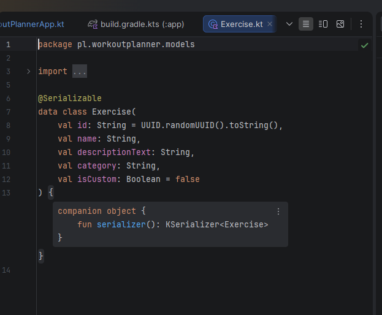
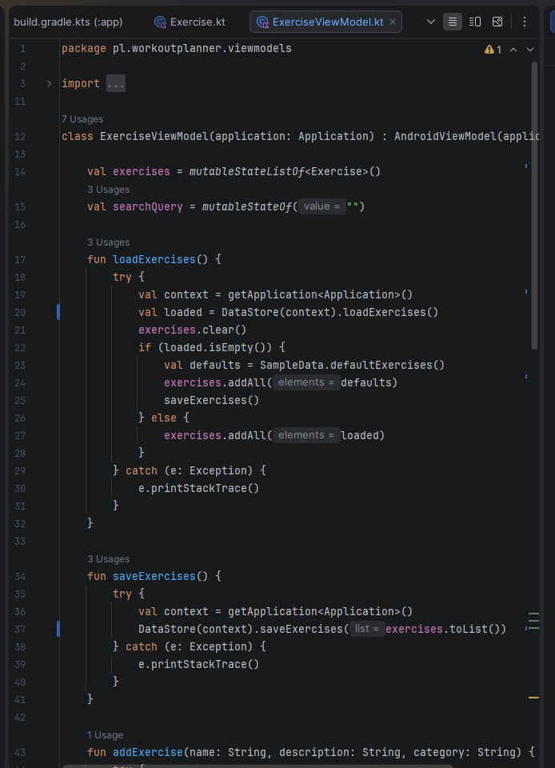
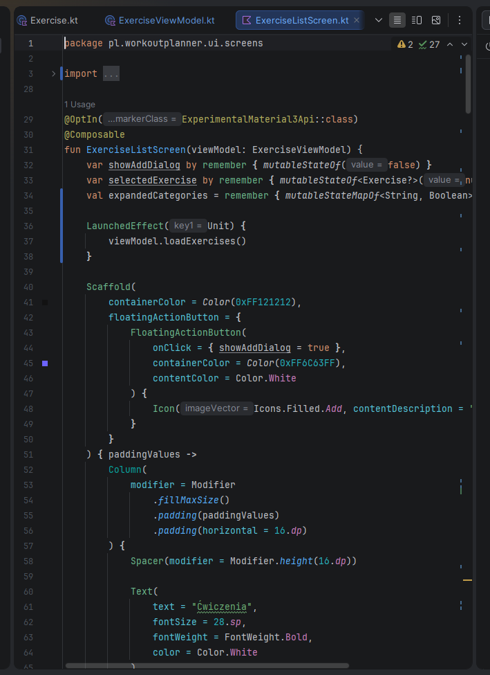
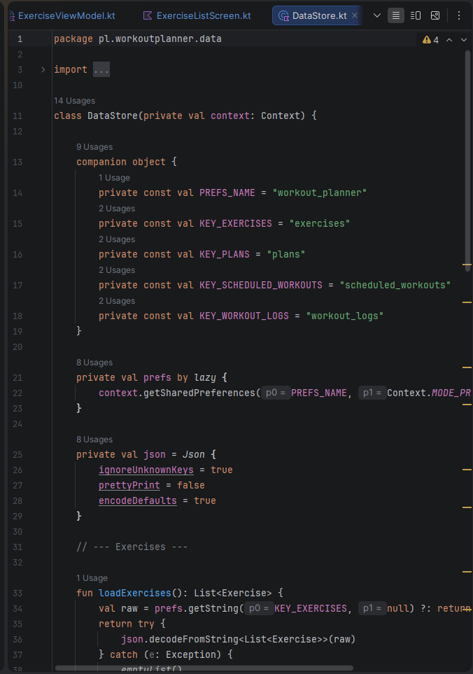
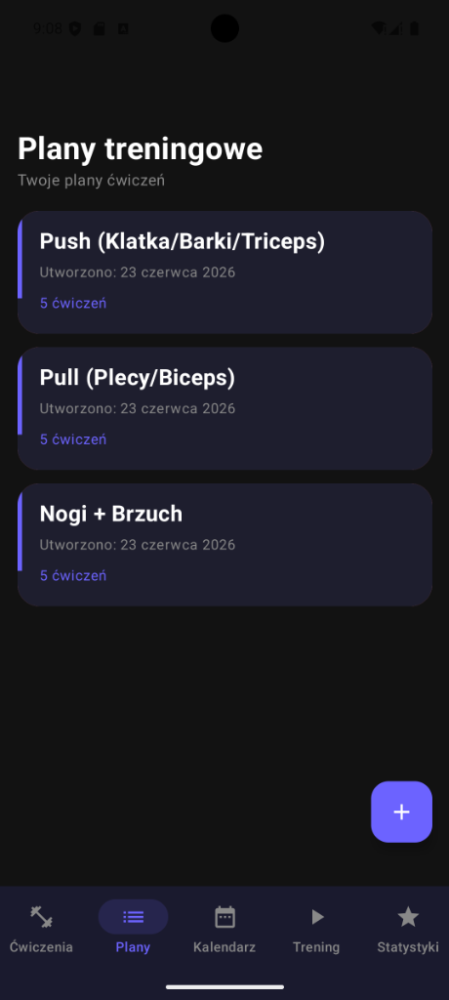
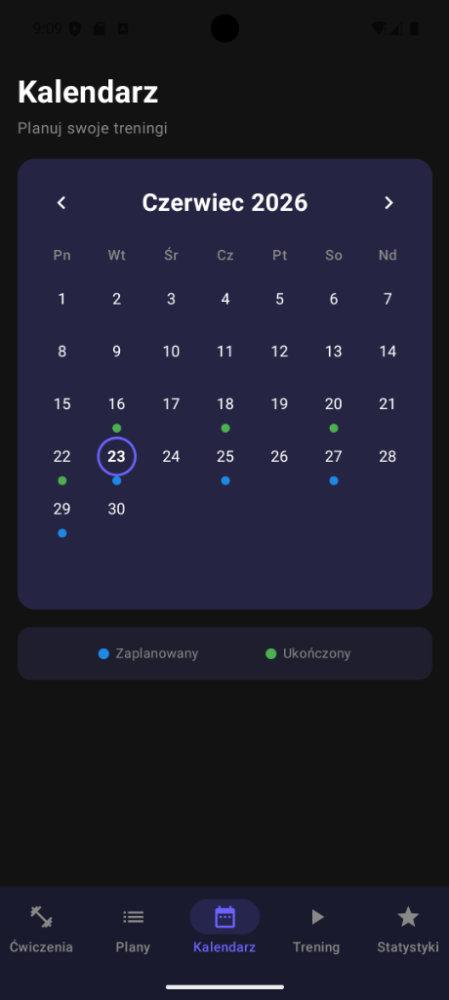
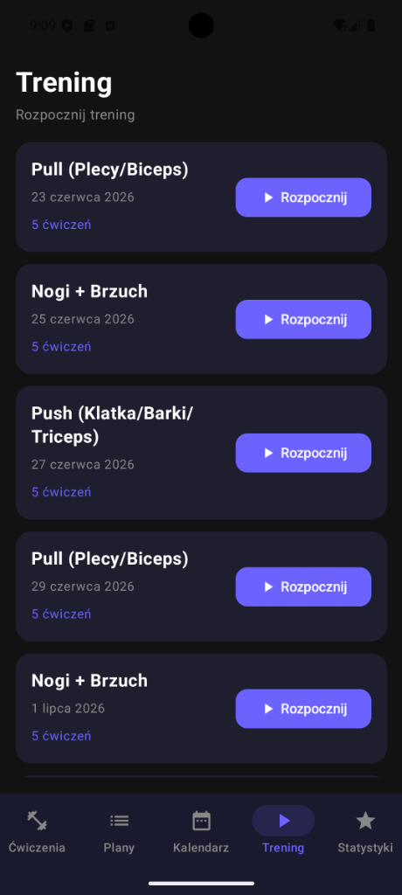
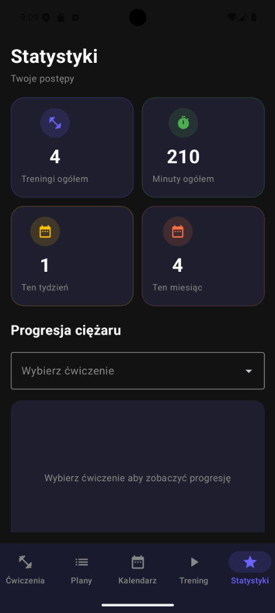

Temat projektu: Mobilna aplikacja do planowania treningów „WorkoutPlanner"
Autorzy: Patryk Polaszewski, Ĺukasz Pytel, Agnieszka Rossa
https://github.com/polaszewsky/WorkoutPlanne.git
Projekt „WorkoutPlanner" to natywna aplikacja mobilna na system Android, służąca do kompleksowego zarządzania treningami siłowymi. Aplikacja umożliwia przeglądanie bazy ćwiczeń, tworzenie indywidualnych planów treningowych, planowanie sesji w kalendarzu, prowadzenie aktywnego treningu z minutnikiem i śledzenie progresji ciężarów. Projekt kładzie nacisk na nowoczesny design w stylu dark mode, intuicyjną nawigację oraz pełne wykorzystanie wzorca architektonicznego MVVM z technologią Jetpack Compose.
Entuzjaści fitness i kulturystyki: Osoby regularnie trenujące na siłowni, potrzebujące narzędzia do planowania i śledzenia swoich treningów, serii, powtórzeń i progresji ciężarów.
Osoby rozpoczynające przygodę z treningiem: Początkujący, którzy potrzebują uporządkowanej bazy ćwiczeń z opisami wykonania oraz gotowych planów treningowych typu Push/Pull/Legs.
Systematyczny rozwój: Dzięki funkcji progresji ciężarów użytkownik widzi swoje poprzednie wyniki i może świadomie zwiększać obciążenia, co prowadzi do mierzalnego postępu.
Oszczędność czasu: Gotowe plany treningowe i zaplanowany kalendarz eliminują konieczność zastanawiania się nad programem treningowym na siłowni — użytkownik skupia się wyłącznie na wykonaniu ćwiczeń.
Realizacja kodu źródłowego w pełni pokrywa zdefiniowane w specyfikacji wymagania funkcjonalne. Logika biznesowa została zaimplementowana w pięciu klasach ViewModel:
Funkcja loadExercises() pobiera dane z DataStore; przy pierwszym uruchomieniu automatycznie inicjalizuje bazę 18 domyślnymi ćwiczeniami z klasy SampleData. Funkcja addExercise(name, description, category) tworzy nowy obiekt Exercise z flagą isCustom = true i dodaje go do kolekcji. Walidacja odbywa się na poziomie warstwy widoku przed wywołaniem tej funkcji.
Kolekcja exercises została oznaczona jako mutableStateListOf. Każda zmiana w tej kolekcji automatycznie powiadamia warstwę widoku o konieczności przerysowania interfejsu.
Metoda scheduleWorkout(plan, date) tworzy nowy obiekt ScheduledWorkout powiązany z wybranym planem i datą. Metoda markCompleted() zmienia status treningu na ukończony.
Funkcja startWorkout(scheduled, exercises) generuje wpisy LogEntry dla każdej serii każdego ćwiczenia z planu. Funkcja lastValues(exerciseId) wyszukuje ostatni ukończony wpis dla danego ćwiczenia, dostarczając podpowiedzi progresji ciężarów.
Funkcja finishWorkout(durationMin) zapisuje log treningu z czasem trwania i oznacza go jako ukończony, co współgra z systemem statystyk.
Interfejs uĹĽytkownika zaimplementowany w technologii Jetpack Compose precyzyjnie odwzorowuje wymagania:
NavigationBar z 5 zakładkami odpowiada za główną nawigację po aplikacji.LazyColumn wraz z pętlą iteruje po elementach dostarczanych przez ViewModel, prezentując je na ekranie w formie rozwijalnych kategorii.SwipeToDismissBox dodany do komórki listy aktywuje systemowy gest usuwania.AlertDialog z listą RadioButton umożliwia wybór planu treningowego do zaplanowania na wybraną datę.W projekcie zastosowano ścisłą separację logiki biznesowej od prezentacji, implementując wzorzec MVVM (Model-View-ViewModel):
Exercise, WorkoutPlan, ScheduledWorkout, WorkoutLog, LogEntry): Reprezentuje czyste struktury danych. Nie posiada żadnej wiedzy o tym, jak dane będą wyświetlane ani jak będą modyfikowane.ExerciseViewModel, PlanViewModel, CalendarViewModel, WorkoutViewModel, StatsViewModel): Stanowi „mózg" aplikacji. Dziedzicząc po AndroidViewModel, implementuje metody modyfikujące stan danych. ViewModel nie importuje elementów interfejsu graficznego.Kod źródłowy projektu został napisany z restrykcyjnym poszanowaniem oficjalnych wytycznych języka Kotlin (Kotlin Coding Conventions):
Exercise, WorkoutPlan, ExerciseViewModel, CalendarScreen.exercises, searchQuery, addExercise(), toggleEntryCompleted().toggleEntryCompleted precyzyjnie opisuje przełączenie stanu ukończenia serii).Poniżej przedstawiono pełną architekturę techniczną wraz z kompletnym kodem źródłowym, co stanowi rozszerzoną dokumentację techniczną wykazującą integralność całego systemu.
MainActivity.kt — gĹ‚Ăłwny punkt wejĹ›cia do aplikacji, inicjalizujÄ…cy okno gĹ‚Ăłwne.Exercise.kt, WorkoutPlan.kt, ScheduledWorkout.kt, WorkoutLog.kt, LogEntry.kt — pliki definicji struktur danych.ExerciseViewModel.kt, PlanViewModel.kt, CalendarViewModel.kt, WorkoutViewModel.kt, StatsViewModel.kt — pliki logiki biznesowej aplikacji (zarzÄ…dzanie stanem).ExerciseListScreen.kt, PlanListScreen.kt, CalendarScreen.kt, WorkoutScreen.kt, StatsScreen.kt — widoki uĹĽytkownika zawierajÄ…ce elementy UI.DataStore.kt — warstwa persystencji danych (JSON + SharedPreferences).SampleData.kt — klasa inicjalizujÄ…ca domyĹ›lne dane aplikacji.






